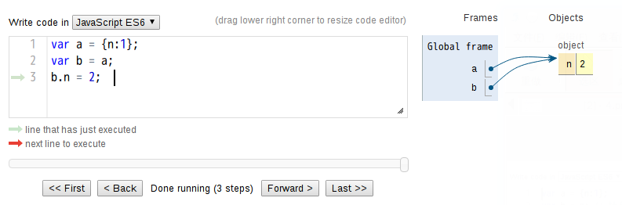
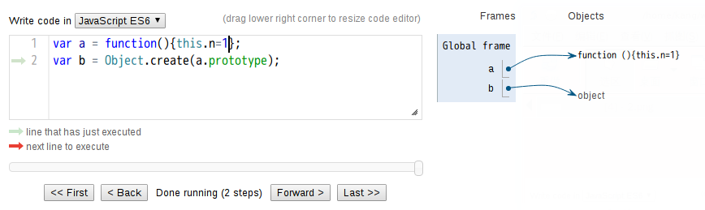
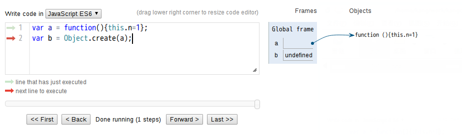
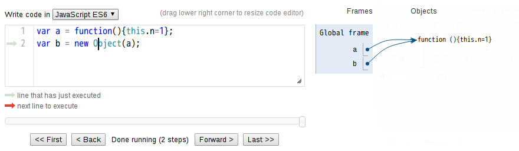

简单讲，浅拷贝就是复制一份引用，所有引用对象都指向一份数据，并且都可以修改这份数据。
var a = {n:1};
var b = a;
b.n = 2;
console.log(b);
==> Object {n: 2}

这种简单的操作对象赋值引用的方式我们可以称之为浅复制，浅复制故名思义它是对整个对象体复制的，没有开辟新内存。
深度复制是对对象枚举，通过查找最末一层值不为对象的属性，然后将该值赋值给新的对象的同名属性上去，由于字符串或者数字的赋值是开辟新内存的。
var a = {n:1};
var b = new Objec.create(a);
  
es5新增的create（） var obj={x:1,arr:[1,2]}; var b=new Objec.create(obj); 创建一个新的空对象并且原形指向obj 此时b就是obj的一个副本，并且地址和obj不一样； 此时如果我们修改b对象中属性的值不影响obj对象；
所以 var b = Object.create(a.prototype); // b 继承了a的原型 这个说法是错误的，应该是b.proto=== a.prototype,严格等于 结论：b的原型指向a的prototype属性
/var F=function(){} var son=new F(); console.log(son.proto==F.prototype)//true/
/ var F={a:1} var son=Object.create(F); console.log(son.proto); {a:1}/
/var F=function(){this.a=3; }; var f=new F(); var son=Object.create(F.prototype); console.log(son.proto== F.prototype);//true/
new就是该对象的 proto 属性指向该类的prototype 而create就直接指向显示的指向
if (!Object.create) {
Object.create = function (o) {
function F() {} //定义了一个隐式的构造函数
F.prototype = o;
return new F(); //其实还是通过new来实现的
};
}